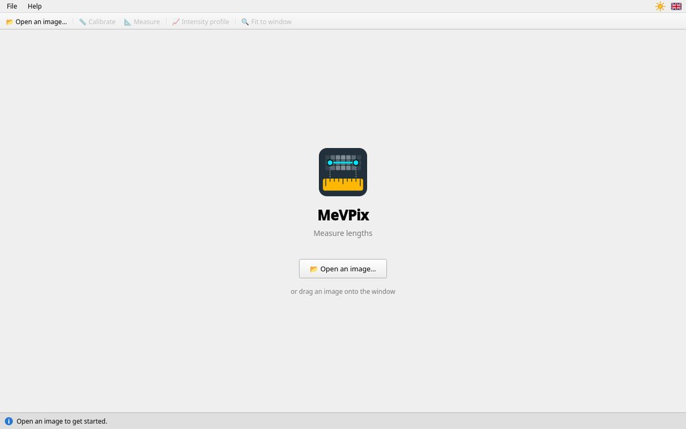
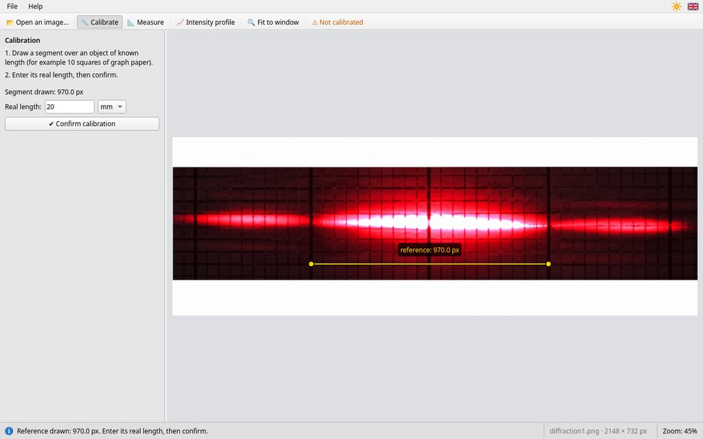
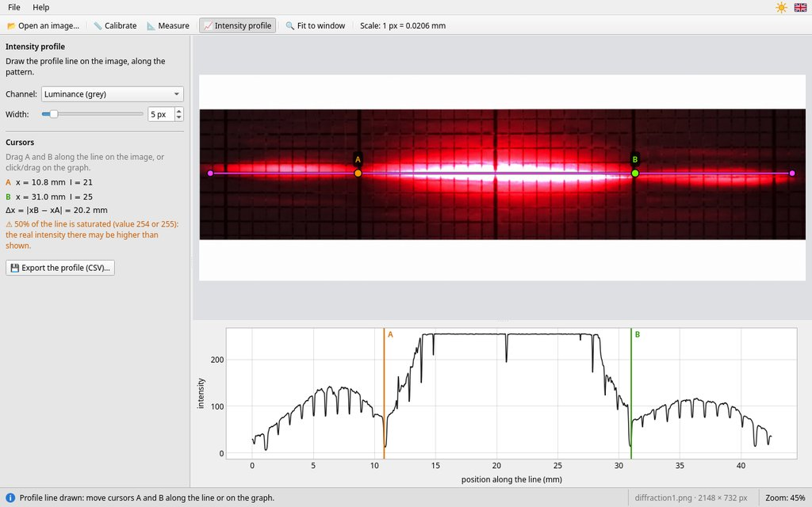

MeVPix — User guide
Measure lengths · version {{version}}
1. What is MeVPix for?
MeVPix measures lengths on an image: a photo taken with a phone, a microscope image, a map… It works in two stages:
- you show the program an object in the image whose length you know: the reference (for example 2 cm of graph paper);
- you draw segments on the image: MeVPix gives their real length.
In practical work, it is used for instance to measure the central spot of a diffraction pattern, the fringe spacing of an interference pattern, the size of a cell under the microscope or a distance on a map.
MeVPix also draws the intensity profile: the curve of the brightness along a line. The dark and bright fringes of an optics pattern are located there far more precisely than by eye.
2. The window

- 1Toolbar: open an image, choose the tool (📏 Calibrate, 📐 Measure, 📈 Intensity profile), see the whole image again (🔍 Fit to window); then the scale of the image.
- 2Theme and language, to the right of the menus: the sun (light theme) or the moon (dark theme), and the flag of the language. A click switches to the other theme or the other language.
- 3Tool panel: what to do, then the results (scale, table of measurements, profile cursors).
- 4The image, with the lines of the chosen tool: the reference in yellow (Calibrate), the measurements in turquoise (Measure) or the profile line in pink (Intensity profile). The lines of the other tools are hidden, not deleted.
- 5Status bar: on the left, what to do next or what just happened (in green, a success; in red, a problem); on the right, the open image, its size in pixels and its zoom.
Lost? Read the status bar at the bottom of the window: it always tells you the next step.
3. Measuring in three steps
Step 1: open the image
On start-up, MeVPix shows its welcome page.


Click 📂 Open an image…, in the middle of the window or in the toolbar (or Ctrl+O), or drag the image file onto the window. MeVPix reads PNG, JPEG, BMP, TIFF and WebP images (TIFF: not in the AppImage for Linux).
iPhone photo (HEIC): MeVPix cannot read it. Email the photo to yourself (it arrives as JPEG), or set the camera to “Formats → Most Compatible”.
Step 2: calibrate
Calibration tells MeVPix how long one pixel of the image is. It is done for each image.
- The 📏 Calibrate tool is selected as soon as an image is open.
- Draw a segment, left-click and drag, from one end to the other of an object whose length you know: lines of the graph paper, marks of a ruler, scale bar of a microscope image. Holding Shift keeps the segment horizontal or vertical.
- Type its real length (for example “20”) and choose the unit (µm, mm, cm or m).
- Click ✔ Confirm calibration, or press Enter. The scale appears in the toolbar (“Scale: 1 px = 0.0206 mm”) and MeVPix switches to the Measure tool.


Step 3: measure
With the 📐 Measure tool, every segment you draw (left-click and drag) becomes a measurement. Its length appears on the image (M1, M2…) and in the table of the panel (see the figure in part 2).
- Correct a measurement: grab an end point (round handle) and move it.
- Delete a measurement: the bin 🗑 next to it, or Ctrl+Z for the last one; Clear all deletes them all.
Keeping your results
- The measurements: 📋 Copy the table, then Ctrl+V in a spreadsheet (LibreOffice Calc, Excel, MeVReg, Regressi) or in your report. The table has two columns: “Measurement” and “Length (mm)”.
- The intensity profile: 💾 Export the profile (CSV)… (part 5).
- The image with its lines: take a screenshot (on Windows, Windows+Shift+S; on Linux, the Print Screen key).
MeVPix does not save your work. Closing MeVPix or opening another image clears the calibration, the measurements and the profile line. Copy them first: MeVPix reminds you with a question, and “Cancel” is the default choice.
4. Measuring well
Pointing precisely
- Zoom with the mouse wheel (the zoom is centred on the mouse), then place each end point to the nearest pixel.
- Move the image with the right mouse button held down.
- 🔍 Fit to window shows the whole image again.
Choosing a good reference
- Long: a 1-pixel error at each end matters much less on a long reference. Over 50 px (1 mm of graph paper), the error is 4 % on every measurement; over 1000 px (2 cm), 0.2 %.
- In the same plane as the measured object, with the camera facing it squarely: otherwise perspective distorts the lengths.
Precision of the result
MeVPix shows three significant figures (“20.2 mm”): this is rounding, not an uncertainty. The uncertainty mostly comes from pointing, about 1 pixel at each end. With the scale “1 px = 0.0206 mm”, that is about 0.04 mm on a measurement. Pointing the same end points several times shows the spread of your measurements.
Reference changed? If you move the reference, even slightly, or change its length or unit, the scale turns orange with ⚠ and the panel asks you to confirm again. Until then, the measurements keep the old scale; after confirming, they are recalculated: nothing is lost.
Without calibration, lengths are in pixels (“px”) and the warning “⚠ Not calibrated” stays visible.
5. The intensity profile
The 📈 Intensity profile tool draws the curve of the brightness along a profile line. On a diffraction or interference pattern, the dips of the curve are the dark fringes.
- Choose the tool: the graph appears below the image. (A second click on the button goes back to the Measure tool.)
- Draw the profile line on the image, along the pattern (left-click and drag; Shift for a horizontal line). A new line replaces the previous one.
- Place the cursors A and B: drag them on the image (they stay on the profile line), or click and drag on the graph (the nearest cursor jumps under the mouse).
- Read on the left their positions x, their intensities I and the gap Δx = |xB − xA|. Positions are counted from the start of the profile line, where you began drawing it.


Graph paper: every line of the paper that crosses the profile line makes a small, narrow dip in the curve (one per millimetre). These are not fringes: place A and B on the minima you can see on the image.
Channel and width
- Channel: luminance (grey) combines the three colours; the Red channel often brings out the fringes of a red laser better.
- Width: the intensity is averaged over a band on both sides of the profile line (drawn in light pink). 10 to 20 px smooth out the noise of the photo and the lines of the paper parallel to the profile line.
Saturation
“⚠ …% of the line is saturated (value 254 or 255)”: the photo reaches the maximum value there, and the real intensity may be higher than shown. This is common in the centre of a diffraction pattern. The positions of the minima remain correct; the heights of saturated maxima do not. To measure them, take the photo again with less light (lower the camera exposure).
The graph
- Mouse wheel: zoom; Shift+wheel: move; double-click: see the whole curve again.
- When hovering, a crosshair gives the position x and the intensity I under the mouse.
Exporting the profile
💾 Export the profile (CSV)… saves the curve in a file with two columns: the
position x (in the unit of the reference, in px without calibration) and the intensity
I (from 0 to 255), one point per pixel of the line. The suggested name is
profile.csv, in the folder of the image; if you type a name without “.csv”, MeVPix
adds it, and it asks before replacing a file that already exists. The file opens in LibreOffice
Calc, Excel, MeVReg or Regressi. With the English interface, columns are separated by “,” and
numbers use a decimal point. In Python:
import pandas as pd
profile = pd.read_csv("profile.csv")
profile.plot(x="x (mm)", y="I")6. Example: diffraction by a slit
A laser of wavelength λ lights a slit of width a. On a screen at distance D, a central spot of width L appears, surrounded by smaller spots. When D is large compared with L:
L = 2 λ D / a so a = 2 λ D / L
- Photograph the pattern on graph paper fixed to the screen, with the camera facing it squarely. Note λ (written on the laser) and measure D.
- Open the photo in MeVPix.
- Calibrate on the thick lines of the graph paper (one every centimetre): for example 2 cm, i.e. “20” and the unit mm.
- Measure L from one dark minimum to the other around the central spot, with the Measure tool, or better with the intensity profile (cursors A and B on the two minima: L = Δx).
- Calculate a. With L = 20.2 mm, λ = 650 nm and D = 2.00 m: a = 2 × 650 × 10−9 × 2.00 / 0.0202 ≈ 1.29 × 10−4 m, i.e. about 129 µm.
Measure wider to measure better. The two third-order minima are 3 L apart. Placing A and B on these minima and dividing Δx by 3 also divides the pointing error by 3.
Young's slits: the interference fringes are spaced by i = λ D / b (b: distance between the slits). Measure the distance across N + 1 fringes and divide by N to get i.
7. Mouse and keyboard
| Action | Gesture |
|---|---|
| Draw a segment | left-click and drag |
| Horizontal or vertical segment | hold Shift while drawing |
| Correct an end point, move A or B on the image | grab the round handle and drag |
| Cancel the line being drawn | Esc |
| Zoom | mouse wheel, centred on the mouse |
| Move the image | right-click and drag |
| See the whole image again | button 🔍 Fit to window |
| Open an image | Ctrl+O, or drag and drop |
| Confirm the calibration | Enter in the length field |
| Delete the last measurement | Ctrl+Z (Measure tool) |
| Place A or B on the graph | click or drag: the nearest cursor follows |
| Profile graph | wheel: zoom; Shift+wheel: move; double-click: see it all |
| Enlarge or shrink the text | Ctrl++, Ctrl+−; Ctrl+0: normal size |
| Open this guide | F1, or Help › User guide… |
8. Troubleshooting
- The “Confirm calibration” button stays greyed out.
- The segment is missing (draw it on the image), or the length is not a positive number. Type only the number (“20”, not “20 mm”): the unit is chosen in the list next to it.
- Lengths are shown in “px”.
- The image is not calibrated: do step 2. The measurements already drawn will be converted.
- The scale is orange, with ⚠.
- The reference, its length or its unit has changed since it was confirmed. Go back to 📏 Calibrate and click ✔ Confirm calibration.
- “Cannot open …: image format not supported”.
- MeVPix cannot read this file: it is not a PNG, JPEG, BMP, TIFF or WebP image (the AppImage does not read TIFF). Convert it to PNG or JPEG; the same goes for an iPhone photo (HEIC) or a PDF.
- My measurements are no longer on the image.
- Each tool shows only its own lines: go back to 📐 Measure (likewise, the reference is with 📏 Calibrate and the profile line with 📈 Intensity profile). If you opened another image, they were cleared: MeVPix asked first.
- The mouse wheel does not zoom.
- The mouse must be over the image, not over the panel or the graph.
- The text has become huge (or tiny).
- Ctrl+0 restores the normal size.
- Ctrl+Z does nothing.
- It deletes the last measurement only with the Measure tool, and when you are not typing in a field.
- The profile graph is empty.
- Draw a profile line on the image with the Intensity profile tool.
- The program closed by itself.
- An unexpected error occurred (“MeVPix hit an unexpected error and must close”). Start MeVPix again and tell your teacher.
For teachers
Installation, classroom settings, error log and licence.
9. Installing and using in class
The installation files are on the releases page: github.com/melectronvolt/MevSuite/releases.
- Windows, no installation: MeVPix fits in a folder
(
MeVPix-version-windows-x64.ziparchive), to copy onto the computer, the school network or a USB stick; runmevpix.exe. It works offline, guide included. The first time it runs on a computer, Windows may show “Windows protected your PC”, because MeVPix is not digitally signed: click “More info”, then “Run anyway”. To open an image directly: right-click on the image → “Open with…” → MeVPix. - Windows, installer:
MeVPix-version-windows-x64-setup.exe(administrator rights) installs MeVPix for all users inC:\Program Files\MeVSuite\MeVPix, with a Start menu shortcut (MeVSuite folder); it is uninstalled from the Windows Settings. A new version replaces the old one; users' settings are kept. - Deployment on many computers (WAPT, GPO), with no window or question: install,
then uninstall:
MeVPix-version-windows-x64-setup.exe /VERYSILENT /SUPPRESSMSGBOXES /NORESTART "C:\Program Files\MeVSuite\MeVPix\unins000.exe" /VERYSILENT /SUPPRESSMSGBOXES /NORESTART - Linux:
.debpackage (Ubuntu, Debian),.rpm(Fedora), or.AppImage, which runs without installation (make it executable). The AppImage does not read TIFF images. - Large photos: a phone photo (12 to 50 Mpx) opens in a few seconds (“Loading…” in the status bar). The display is reduced if needed, but measurements and the profile always use the original pixels. A photo taken in portrait mode is turned upright.
- Projector: Ctrl++ enlarges the text and the buttons (the enlargement is capped so that the panels stay visible); Ctrl+0 returns to the normal size.
10. Settings
On first launch, MeVPix uses the language and the light or dark theme of the system (English if the language is neither French nor English). The sun/moon and flag buttons change the theme and the language; numbers follow the language (decimal point in English).
MeVPix remembers from one session to the next: the language, the theme, the unit of the
reference, the channel and width of the profile, the text enlargement, the last folder opened,
the size of the window. These settings are in a small text file mevpix.ini, specific to
each user and editable by hand; deleting it restores the defaults.
| System | Location |
|---|---|
| Windows | %APPDATA%\MeVSuite\mevpix.ini |
| Linux | ~/.config/MeVSuite/mevpix.ini |
Enforced settings (computer room, USB stick): a mevpix.ini file
is read at every launch and takes priority over the user's settings; MeVPix never writes it. On
Windows, it goes in the folder of mevpix.exe (C:\Program Files\MeVSuite\MeVPix
with the installer, or the folder of the portable version); on Linux, in /etc/MeVSuite/
(packages and AppImage). For example:
language = fr
theme = lightenforces French and the light theme on every computer. The possible keys are those of the user's
file; language and theme also accept auto (language or theme
of the system). Help › About MeVPix… shows the path of the user's file, and that of
the enforced file if there is one.
The four programs of the suite (MeVPix, MeVCine, MeVReg, MeVSono) keep their settings in this same
MeVSuite folder. The guide is written each time it is opened to the system's temporary
folder (mevpix-help): it can be printed or saved from the browser.
11. Errors, contact and licence
Unexpected error: MeVPix shows a message before closing and saves the details
(the cause and, after a crash, the call stack) in mevpix.log, in the same folder as
mevpix.ini; the message gives its path. The log only keeps the last error: attach it
to your report.
Contact: Rémi MEVAERE, suite@sciences-physiques.net. Comments, ideas for improvement and problems are welcome.
Licence: MeVPix is free software, released under the MIT licence; it is written in C++ with the free Qt library (LGPL version 3). The components used and their licences are listed in Help › About MeVPix…; Help › About Qt… gives the version of Qt and its licence terms.